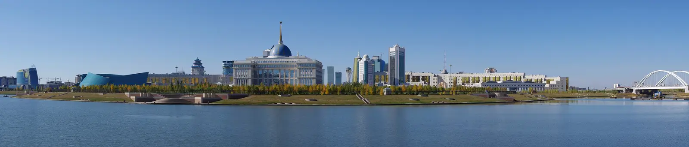
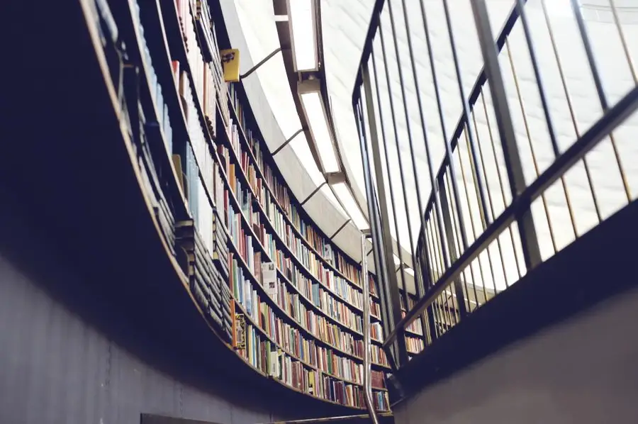
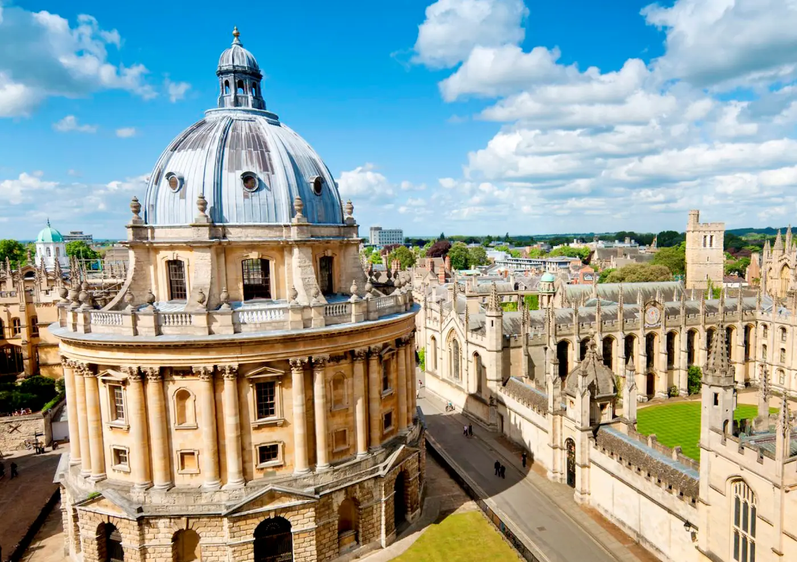

14 · Коллаж собирается из фото
Фотографии сначала разбросаны за краями и повёрнуты. С прокруткой они подлетают и на последнем шаге складываются в ровный коллаж по обе стороны белой карточки, в которой сменяются абзацы.
Пример на Awwwards: Museum of Love ↗Прокрутите вниз: блок закрепится и покажет историю в четыре шага






О компании
Постановлением Правительства Республики Казахстан от 4 апреля 2005 года №301 создано акционерное общество «Центр международных программ» со 100-процентным участием государства в уставном капитале.
Акционером АО «Центр международных программ» является министерство науки и высшего образования.
Определить основным предметом деятельности АО «ЦМП» - осуществление комплекса мероприятий по международным программам подготовки, переподготовки и повышения квалификации кадров за рубежом, в том числе международной стипендии Президента Республики Казахстан «Болашак».
АО «Центр международных программ» администрирует программу «Болашак», научные стажировки, а также межправительственные гранты. Центром проводится прием документов, конкурсный отбор.
ПодробнееТексты блока — с bolashak.gov.kz, слово в слово. Фото Астаны: Ken and Nyetta, CC BY 2.0, кадрировано; фото кампуса, глобуса, библиотеки — CC0; остальные фото — с сайта Центра. Анимации выключаются при настройке «уменьшить движение».